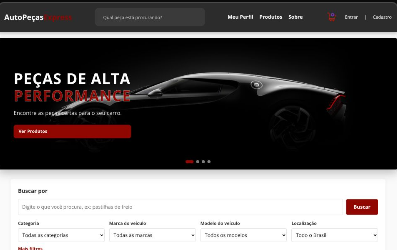
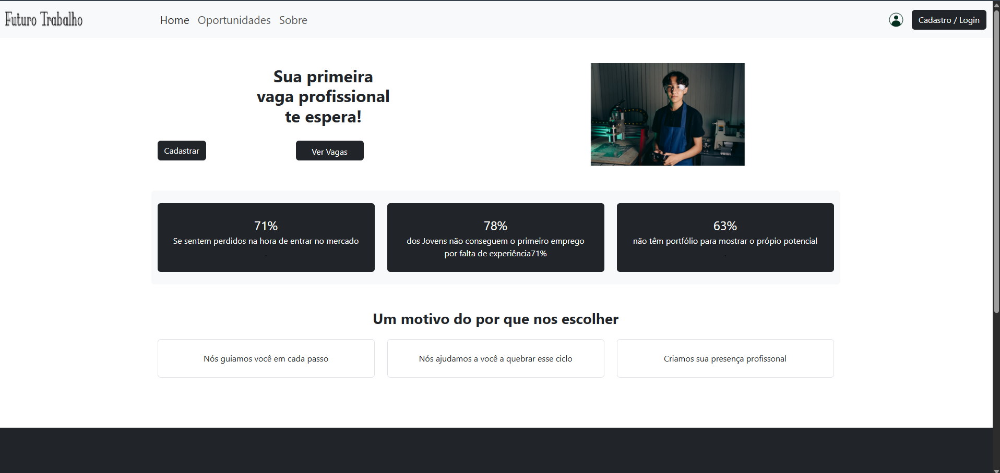

Desenvolvimento web
HTML5, CSS3, JavaScript e criação de páginas responsivas.
Disponível para oportunidades
Olá, eu sou
Sou formado em Técnico em Informática para Internet pela ETEC Sebrae. Gosto de transformar ideias em soluções digitais e estou em busca da minha primeira oportunidade profissional para continuar aprendendo e contribuir com projetos reais.

Um pouco sobre mim
Minha formação técnica me proporcionou uma base em desenvolvimento web, lógica de programação e tecnologia da informação. Durante os estudos, participei de projetos acadêmicos que me ajudaram a praticar a criação de interfaces, organização de código e desenvolvimento de funcionalidades.
Tenho interesse em desenvolvimento web, bancos de dados e em aprender novas ferramentas. Também concluí um curso de manutenção de celulares para iniciantes, ampliando meu contato com a área de tecnologia. Busco uma oportunidade de estágio ou primeiro emprego para evoluir profissionalmente e colaborar com uma equipe.
O que utilizo
Conhecimentos que venho desenvolvendo na formação técnica e em projetos práticos.
HTML5, CSS3, JavaScript e criação de páginas responsivas.
Fundamentos de banco de dados, MySQL e contato com Firebase.
Git, GitHub e Visual Studio Code para desenvolvimento e versionamento.
Conhecimentos de informática e noções de manutenção de celulares.
Raciocínio lógico, análise de problemas e busca por soluções.
Trabalho em equipe, organização, comunicação e disposição para aprender.
Minha jornada
ETEC Sebrae
Formação técnica com foco em desenvolvimento web e fundamentos de tecnologia da informação.
Curso introdutório voltado aos fundamentos de manutenção de dispositivos móveis.
Trabalhos selecionados
Projetos acadêmicos e pessoais nos quais aplico meus conhecimentos e continuo praticando.

Projeto de TCC da ETEC Sebrae: plataforma para busca e comercialização de peças e acessórios automotivos, com foco especial em componentes para veículos elétricos. Inclui desenvolvimento web, gerenciamento de produtos e sistema de usuários.
Ver demonstração
Projeto desenvolvido na disciplina de Sistemas Web II para ajudar jovens e estudantes a encontrar oportunidades de primeiro emprego e estágio, aproximando candidatos de oportunidades compatíveis com seus objetivos.
Ver demonstraçãoConceito de uma plataforma de gerenciamento de tarefas que utiliza inteligência artificial como proposta para apoiar a distribuição de atividades conforme as habilidades da equipe, buscando melhorar o fluxo de trabalho e o cumprimento de prazos.
Vamos conversar?
Procuro oportunidades de estágio ou primeiro emprego em tecnologia. Se você deseja conversar sobre uma oportunidade ou projeto, entre em contato.
Fale comigo